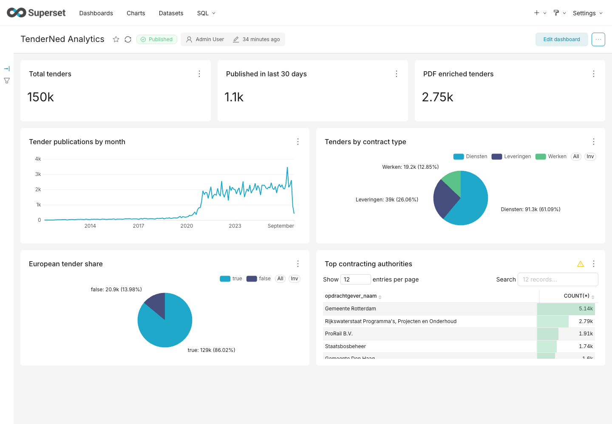

Real local k3s infrastructure. Real source metadata. Repeatable commands.
default_transaction_read_only=on.docs/adr/0003-tender-analytics-local-snapshot.md.Exact column validation, duplicate-ID rejection, transactional copy, and typed upsert run inside the local Dagster user-code pod.

MAX(snapshot_loaded_at) from 06:19:42 to 06:55:35.workdirs/dagster/tender_analytics.py:173 updates only rows that are distinct.cli/k8s_renderer.py:352 puts mounted-data checksums in pod templates.scripts/tender/provision-dashboard.py:302 reconciles the database connection.scripts/tender/provision-dashboard.py:381 scopes chart identity to its dataset.Post-fix evidence: revision 12 created pod cds-dagster-user-code-7bb989c56b-z8z5t, and the unchanged load preserved the timestamp exactly.
3073b1c
PASS cluster ready
FAIL Dagster materialization
FAIL no-op convergence
FAIL dashboard provisioning
PASS Superset objects
PASS browser
pass=4 fail=3
current branch
PASS cluster ready
PASS Dagster materialization
PASS no-op convergence
PASS dashboard provisioning
PASS Superset objects
PASS browser
pass=7 fail=0
make tender-export make tender-load make tender-dashboard make tender-e2e # === ... pass=7 fail=0 ===
Dagster: http://127.0.0.1:38142
Superset: http://127.0.0.1:38143/superset/dashboard/tender-analytics/